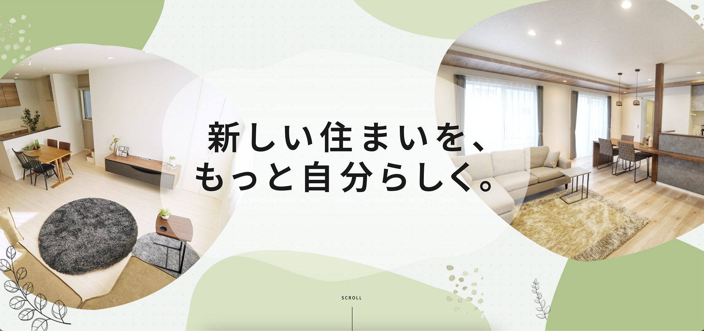
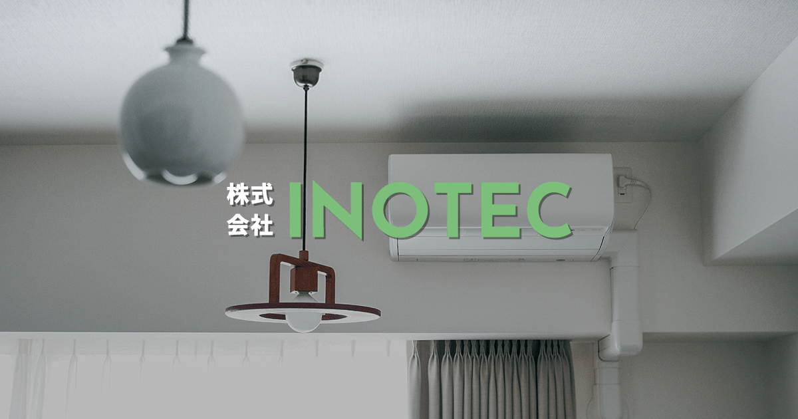
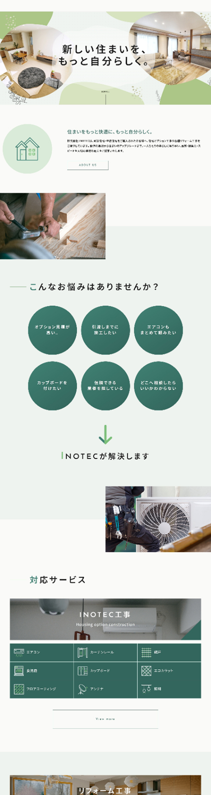
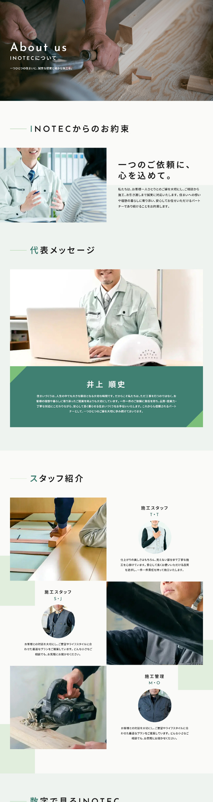
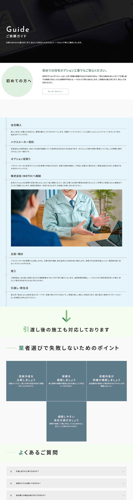
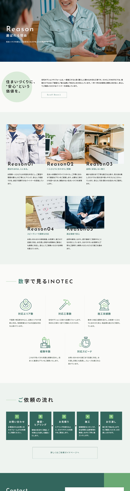

担当範囲
ワイヤーフレーム設計 / MVデザイン
外注様へコーディング指示
ライティング

ワイヤーフレーム設計 / MVデザイン
外注様へコーディング指示
ライティング
個人・法人からの新規問い合わせ増加
約2ヶ月
Figma / Photoshop
HTML / CSS / JavaScript
新築住宅のオプション工事から各種リフォームまで、住まいに関する幅広いニーズに応えるブランドサイトを制作。 清潔感のあるホワイトをベースに、深みのあるグリーンを取り入れ、住宅サービスに求められる安心感と信頼感を表現しました。価格だけではなく、スタッフの人柄や提案力、施工品質まで伝わる構成とし、「まずは相談してみたい」と感じてもらえる親しみやすいサイトを目指しています。

VIEW WEBSITE ↗「新しい住まいを、もっと自分らしく。」というコンセプトを軸に、清潔感と安心感を感じられるデザインに仕上げました。住宅購入という人生の大きな節目に寄り添うサービスだからこそ、過度な装飾は避け、白を基調とした余白のあるレイアウトと、グリーンをアクセントにしたやさしく信頼感のあるデザインを採用しています。
COLOR
#57A66D#4A5563#DCE5DE#FAFAF8TYPOGRAPHY
AaJosefin Sans
幾何学的なフォルムと細身で伸びやかなプロポーション。




「選ばれるのは、人にある。」という企業の姿勢をデザインにも反映。スタッフや施工の様子が伝わる写真を効果的に取り入れ、住宅会社らしい信頼感を保ちながらも、堅くなりすぎない親しみやすさを意識。
エアコンやカップボードなどの住宅オプションから、水まわり・内装・外装リフォームまで、幅広い工事を分かりやすく整理。写真・工事内容・特徴を統一したフォーマットで見せることで、自分に必要なサービスを直感的に探せる構成。
ハウスメーカーからオプション見積りを受け取ったユーザーの行動を想定し、「相談→比較・検討→施工」までの流れを分かりやすく設計。適正価格や施工品質、対応力といった判断材料を各所に配置し、納得したうえでお問い合わせへ進めるサイトへ。